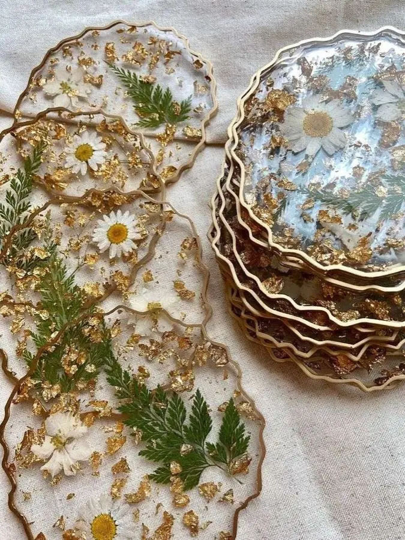

Смола и природные материалы
Изделия из эпоксидной смолы на заказ
Прозрачность, глубина и живые детали внутри: сухоцветы, шишки и другие природные элементы становятся частью подсвечника или декоративного изделия.

Что можно создать
Соловей делает подсвечники и декоративные изделия из эпоксидной смолы, в том числе с натуральными цветами и другими природными элементами. Форму, цвет, наполнение и детали мы обсуждаем до начала работы.
Среди уже созданных работ — подсвечник с карельскими шишками и внутренней подсветкой, а также подсвечник с цветами. У каждого предмета свой характер: природные материалы невозможно повторить абсолютно одинаково.
Как начинается заказ
Можно прислать референс или описать человека, пространство, чувство и историю, для которой создаётся предмет. Соловей задаст вопросы, предложит направление и обозначит возможности материала.
- Согласуем форму и назначение изделия.
- Выберем цвет и наполнение.
- Обсудим срок и точную стоимость.
- Заранее договоримся о способе получения.
Стоимость и детали
Изделия ручной работы стоят от 3 000 ₽. Итоговая цена зависит от размера, формы, наполнения и сложности. Одна общая цена для всех работ только запутает, поэтому точный расчёт появляется после обсуждения идеи.
Обсудить изделие ↗